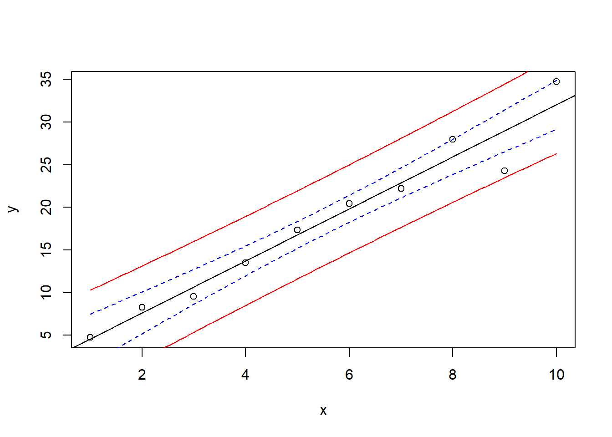

dat <- read.csv("oecd.csv")08-Linear Regression: Dependency of Chlorophyll on Phosphorus in Lakes
1 Introduction
The following example is based on the classical OECD study on “Eutrophication of Inland Waters” from Vollenweider & Kerekes (1980), that, among others, describes the relationship between annual mean chlorophyll concentration and annual mean total phosphorus in lakes. A website about aspects of this study can be found on https://www.chebucto.ns.ca/ccn/info/Science/SWCS/TPMODELS/OECD/oecd.html.
We use a data set that was taken manually from the figure below. It is of course not exactly the original data set, but should be sufficient for our purpose.

This data set contains annual average concentrations of total phosphorus (TP, \(\mathrm{\mu g L^{-1}}\)) and chlorophyll a (CHLa, \(\mathrm{\mu g L^{-1}}\)) of 92 lakes. A few points were overlapping on the original figure, so that 2 lakes are missing.
1.1 Methods
Download oecd.csv from the course web1 page and copy it to a suitable folder. The first row contains the variable names (header=TRUE) and don’t forget to set the working directory to the correct location:
Now, inspect the data set in RStudio. The columns contain an ID number (No), phosphorus (TP) and chlorophyll (CHLa) concentration and a last column indicating the limitation type of the lake: P: phosphorus limitation, N: nitrogen limitation and I: light limitation.
1.2 Correlation coefficient
First we want to know how much chlorophyll and phosphorus depend on each other. For this purpose, we calculate the Pearson and Spearman correlations and test it for significance:
plot(dat$TP, dat$CHLa)
cor.test(dat$TP, dat$CHLa)
cor.test(dat$TP, dat$CHLa, method="spearman")
cor.test(rank(dat$TP), rank(dat$CHLa))Compare the values and discuss the results. The last line is just an alternative way to estimate Spearman correlation if ties (several times the same value) occur.
1.3 Linear Regression
Now lets fit a linear regression (lm means linear model) and save the result into a new object reg. This object can now be used to plot the regression line (abline) or to extract regression statistics (summary):
plot(dat$TP, dat$CHLa)
reg <- lm(dat$CHLa ~ dat$TP)
abline(reg)
summary(reg)2 Exercise
2.1 Repeat the analysis with log transformed data
The results indicate that one of the most important pre-requisites of linear regression, namely “variance homogeneity” was violated. This can be seen from the fan-shaped pattern where most of the data points are found in the lower left corner. A logarithmic transformation of both variables can help here, so we should repeat the analysis with the logarithms of TP and CHLa.
x <- log(dat$TP)
y <- log(dat$CHLa)
plot(x, y)
reg <- lm(y ~x)
abline(reg)
summary(reg)2.2 Confidence intervals
Confidence and prediction intervals are useful to demonstrate uncertainty of the regression line and for predictions. The following code shows an example with test data.
x <- 1:10
y <- 2 + 3 * x + rnorm(10, sd=2)
plot(x, y)
reg <- lm(y ~ x)
newdata <- data.frame(x=seq(min(x), max(x), length=100))
conflim <- predict(reg, newdata=newdata, interval="confidence")
predlim <- predict(reg, newdata=newdata, interval="prediction")
lines(newdata$x, conflim[,2], col="blue", lty="dashed")
lines(newdata$x, conflim[,3], col="blue", lty="dashed")
lines(newdata$x, predlim[,2], col="red", lty="solid")
lines(newdata$x, predlim[,3], col="red", lty="solid")
abline(reg)
The result of predict is a matrix with 3 columns:
fit lwr upr
1 5.398310 2.392625 8.403994
2 5.654311 2.691642 8.616979
3 5.910312 2.990395 8.830228- the first column contains the fit,
- the second and 3rd column the confidence resp. prediction intervals.
You can also find this out yourself by reading the documentation (?predict) or by inspecting conflim and predlim in the RStudio object explorer.
The data frame newdata contains \(x\) values for the prediction. Please note that the variable name (e.g. x or log_TP) must be exactly the same as in the lm-function!
3 Tasks
3.1 Course task
Combine your solution for the log-transformed chlorophyll-phosphorus regression with the confidence interval example, to reproduce the appearance of OECD Figure. Discuss the results.
3.2 Self study
Inform yourself about the background of eutrophication, the classical OECD study (Vollenweider & Kerekes, 1980) and recent developments. Read Section 6 and 6.1 of the OECD report and find additional references.
Discuss the results of the Exercises above and back-transform the double logarithmic equation to linear scale using the laws of logs on a sheet of paper:
\[\begin{align} \log(y) & = a + b \log(x) \\ y & = \dots \end{align}\]
Compare the equation with the equation in Figure 6.1. of the OECD report.
Repeat the analysis for the P-limited data only: add confidence intervals, back-transform the equation and compare it with the equation in Fig. 6.1 of the report
Optional: The axes of the own plots are log-transformed, and the annotations show the log. This is not easy to read. Find a way to annotate the axes with the original (not log-transformed) values as in the original report and add grid lines.
Note: if you need help, contact your learning team members or ask in the matrix chat.
3.3 Notes
Difference between corelation and regression
correlation measures whether a linear or monotonous dependency exists
regression describes the relationship with a mathematical model
Example how to use a subset
We can create a plot with different plotting symbols, by making the plotting character pch dependent on the limitation type
plot(dat$TP, dat$CHLa, pch = dat$Limitation)Another method using plotting symbols employs conversion from character to a factor and then to a numeric:
plot(dat$TP, dat$CHLa, pch = as.numeric(factor(dat$Limitation)))The following shows one approach for subsetting direcly in the lm-function. It is of course also possible to use a separate subset function before calling lm.
reg <- lm(CHLa ~ TP, data = dat, subset = (Limitation == "P"))
# ...References
Vollenweider, R. A., & Kerekes, J. (1980). OECD cooperative programme for monitoring of inland waters. (Eutrophication control) [Synthesis Report]. Organisation for Economic Co-operation and Development. https://www.chebucto.ns.ca/science/SWCS/TPMODELS/OECD/OECD1982.pdf
Footnotes
The data set is available from https://tpetzoldt.github.io/datasets/data/oecd.csv. Students of TU Dresden find it also in the OPAL learning management system.↩︎